Phase 4 · Implementation & QA
The approved Phase 3 design, implemented as a statically generated Nuxt 3 site with file-based content. 49 Playwright tests pass, the production build succeeds, and nothing is deployed.
25 November 2026 · Nuxt 3.21.11 · Vue 3.5.46 · TypeScript 5.9.3 · Playwright 1.65.1
| Decision | Detail |
|---|---|
| Framework | Nuxt 3.21.11, Vue 3 Composition API with <script setup>, TypeScript throughout, static generation (nuxi generate) |
| Styling: no Tailwind | The brief allowed "Tailwind CSS or compatible existing styling architecture". The approved design is already expressed as CSS custom-property tokens plus a component layer, so those files were carried over unchanged into assets/css/. Re-expressing them as Tailwind utilities would have risked silent drift from the approved design and added a dependency that buys nothing here. Tokens and components are identical to Phase 3 |
| Icons | lucide-vue-next — sun / moon / monitor / menu |
| Content | Six JSON files in content/, typed by types/content.ts and read through composables/useContent.ts. No component edit is needed to change any text, project or figure |
| Routing | File-based. Project detail pages are generated per slug from content; adding a project adds its route automatically |
| Not built | No admin dashboard, no authentication, no database, no backend API. Two server routes exist solely to generate sitemap.xml and robots.txt at build time |
The brief asked me not to trust the mockup's "8 Angular applications" and "6 Flutter apps". Both were re-measured against the repositories on both drives, counting all three of your git identities across all branches. Both figures hold, and the Angular figure is conservative.
| Angular — claim: 8 | Marker | Your commits |
|---|---|---|
| EnBuilder2021 | angular.json | 1,671 |
| EnServicePortal | angular.json | 170 |
| EnBuilderPurchaserPortal | angular.json | 141 |
| EncharityPortalAdmin-V2 | angular.json | 117 |
| EnCharityUserPortal-V2 | angular.json | 103 |
| EnBuilderFieldService | angular.json | 81 |
| ShoplocallyAdmin | angular.json | 61 |
| ShoplocallyWeb | angular.json | 61 |
| Three further Angular repositories exist below the threshold (19, 10 and 8 commits), plus NPCRM at 188 which you excluded. Counting them would give 9–12, so 8 understates rather than overstates. | ||
| Flutter — claim: 6 | Evidence | Your commits |
|---|---|---|
| AgentMate-CRM-Mobile | pubspec.yaml | 224 |
| HomeFoody Suppliers | pubspec.yaml · published | 116 |
| HomeFoody Customers | pubspec.yaml · published | 73 |
| ATMMileageTracker | pubspec.yaml | 68 |
| EnBuilder 2026 purchaser portal | nested in a monorepo — weaker evidence | 126 (repo) |
| ATM-OpenHouseApp | repo absent; documented in your own flutter-apps-summary.html | 20 |
Two corrections applied to the content. EnBuilderFieldService is 81 of 165 commits,
not 63 of 147 — the earlier count missed your Jyoti Jabare git identity. The EnCharity donor portal total is
282, not 272. Both are now correct on the site and in the planning documents.
| Route | Page | Notes |
|---|---|---|
/ | Home | Approved section order: nav → hero → highlights → featured projects → technical expertise → experience → certifications → contact → footer |
/about | About | Two-depth narrative with at-a-glance rail |
/experience | Experience | Employer-attributed timeline, per-project contribution |
/projects | Projects listing | Filters: All 11 · Full-stack 7 · Flutter 3 · AI 3 |
/projects/[slug] | Case studies ×11 | Both approved states — gallery, or the labelled "no screenshots" callout |
/skills | Skills | Seven groups plus honest gaps |
/certifications | Certifications | Certificates, delivery-record KPI row, evidence cards |
/contact | Contact | Direct contact; no form backend, stated plainly on the page |
/sitemap.xml, /robots.txt | Generated | 18 URLs, built from content |
| 404 | Error page | Styled, with routes back into the site |
localStorage, applied by an inline <head> script before first paint so there is no flash. Verified by test, including across navigation and reload.aria-pressed state and a screen-reader live region announcing the result count.content/site.json. Today they are null, so the site shows no dead controls.Person structured data on the home page; generated sitemap and robots; semantic landmarks and a skip link.All five were found by running the suite or by inspecting rendered output — none were reported as passing before they were fixed.
| # | Defect | Resolution |
|---|---|---|
| 1 | A published screenshot contained personal data. 04-edit-menu-item.jpg was in fact the Customers List screen — six names, addresses and phone numbers, including Jyoti's own. My Phase 3 mapping of the source captures was wrong, and three supplier captions were attached to the wrong screens. | Image deleted from the site and from the approved assets folder. All four supplier screens re-staged from individually verified sources, captions corrected, and a Playwright privacy guard added that fails if any file outside the approved list appears under public/images/projects. The published set was then cut to four screenshots, two per app, at your request |
| 2 | The supplier dashboard screenshot showed test-account customer names in the order list | Names and dates blurred; KPI tiles, statuses and totals kept. Noted in the gallery caption |
| 3 | /favicon.ico returned 404 on every page — caught by the "no console errors" assertion | Brand mark created (teal monogram with the accent dot) as favicon.ico, apple-touch-icon.png and icon-512.png; links added to the document head |
| 4 | Adding intrinsic width/height to gallery images broke their layout — 1,216px-tall empty boxes, because the CSS had no height: auto | Rule corrected in the site stylesheet and back-ported to the Phase 3 design source so the two stay identical |
| 5 | SettlementFormPOC rendered an empty "no screenshots" explanation — it had a plate but no note | Note written; a test now requires every plate project to carry one and to have an empty gallery |
49 passed, 0 failed, 50.3s of test time (Playwright 1.65.1, Chromium via the system Chrome channel,
run against the generated static output). Reproduce with npm run generate && npm run test:e2e.
| Group | Tests | What is asserted |
|---|---|---|
| Routes | 19 | Every route returns <400, renders exactly one non-empty h1, has a title, and logs zero console errors; unknown routes render the 404 page |
| Navigation | 3 | Header links reach every section, the mobile panel opens and navigates, project cards open the matching case study |
| Filters | 2 | Counts match rendered cards for all / full-stack 7 / Flutter 3 / AI 3, pressed state is correct, result count is announced |
| Case-study states | 3 | 4 gallery images load after scroll with descriptive alts and declared dimensions; the no-assets project shows the callout and no gallery; plates are labelled |
| Theme | 3 | Switching, persistence across reload and navigation, no flash before paint, and both themes render key pages without console errors |
| Responsive | 6 | No horizontal overflow at 360, 390, 768, 1366 and 1920 across five routes; navigation swaps between mobile and desktop |
| Assets & links | 4 | No dead résumé button, no invented verification links, external links carry target and rel="noopener", every image has a real alt |
| SEO | 4 | Unique title, description and canonical per page; Open Graph tags; Person JSON-LD; sitemap with 18 URLs and robots; semantic landmarks |
| Content integrity | 2 | Home shows the cross-checked figures (8+, 31, 8, 6) and contains no "NN% faster" style claims; both disciplines appear in the hero |
| Privacy guard | 3 | Only the 4 approved screenshots exist; every referenced image is approved; no filename suggests personal data; every plate project carries its explanation |
| Command | Result |
|---|---|
npm run build | Success — 3.39 MB server output (784 kB gzip) |
npm run generate | Success — 40 routes prerendered in 0.7s, 2.3 MB static output in .output/public |
| Console errors at runtime | None, on any route, in either theme |
| Deployment | Not performed. No domain purchased or configured, as instructed |
Captured from the generated output via Playwright, with lazy images forced to load and decode.
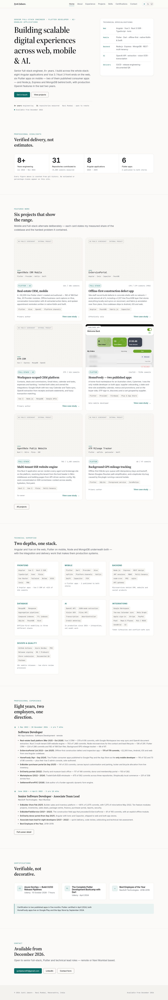
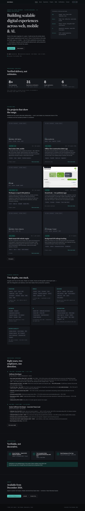
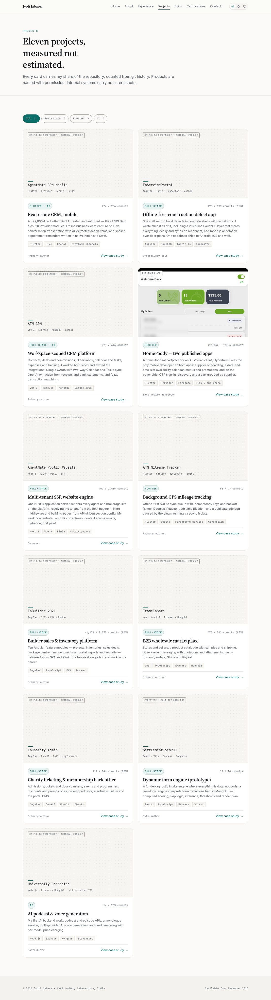
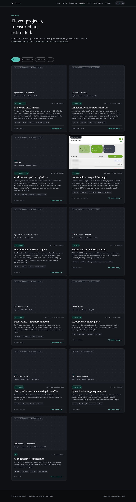
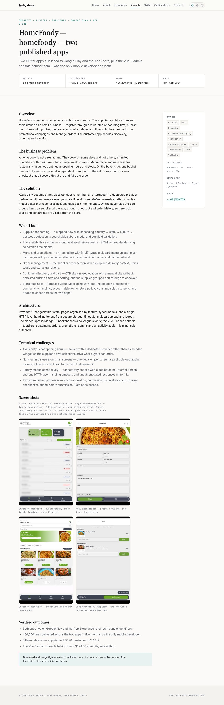
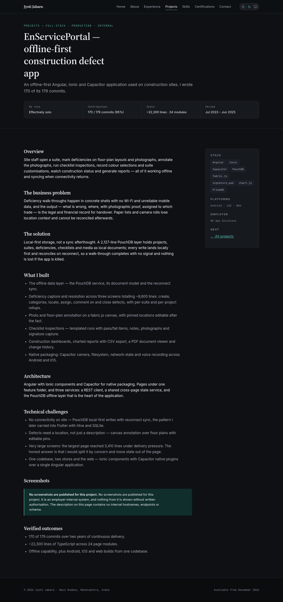
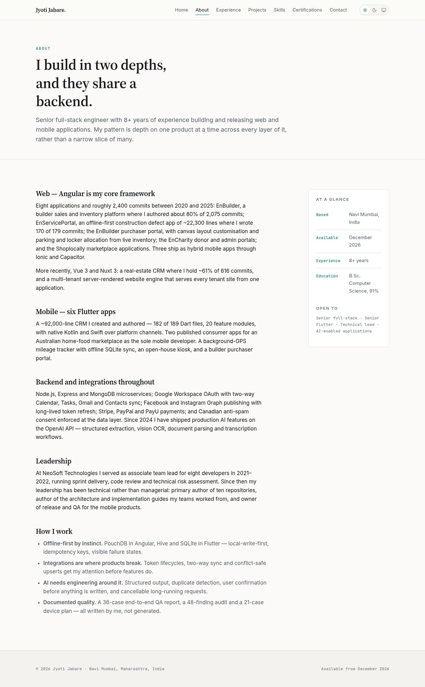
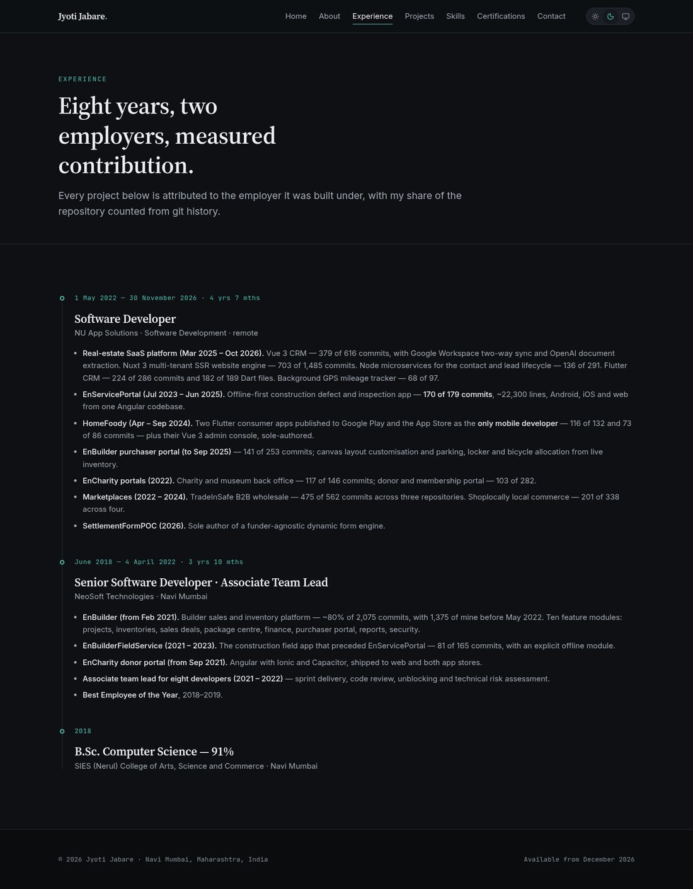
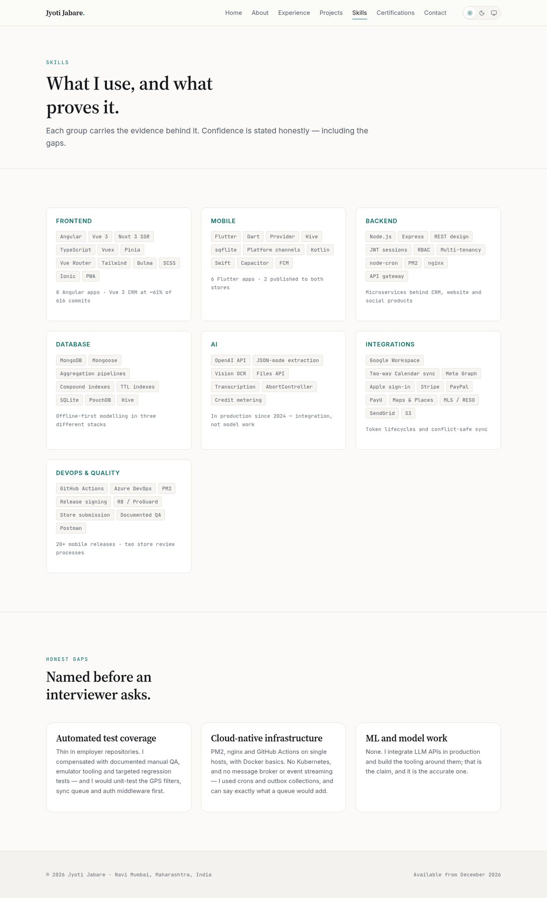
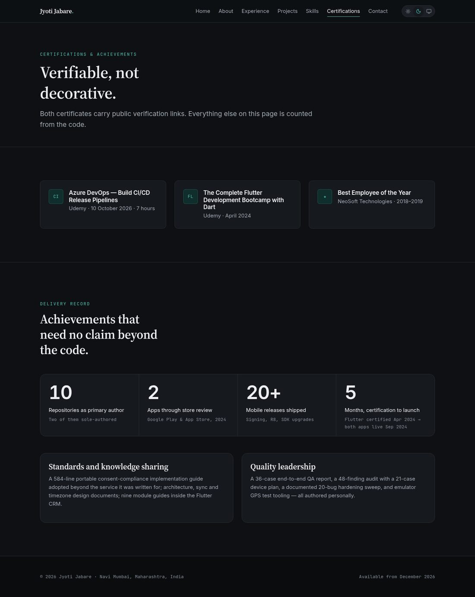
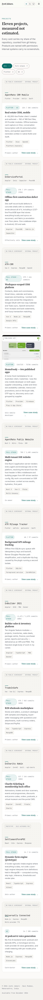
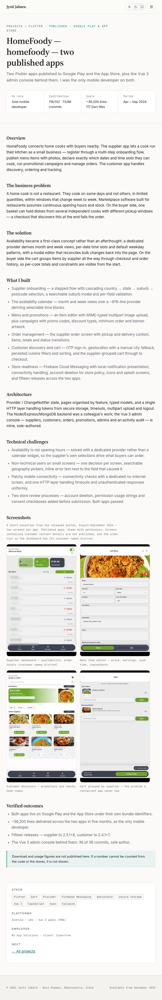
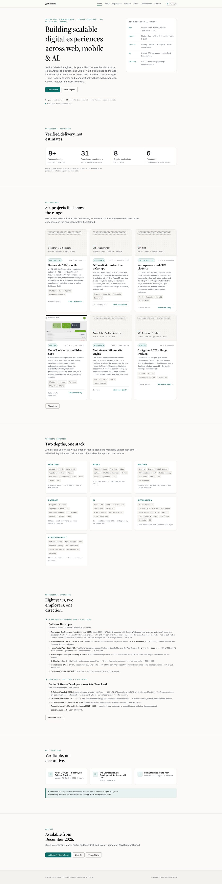
Each is wired to a single field in content/site.json or certifications.json. Set the value and the
control appears; until then nothing dead is shown.
| Asset | Where it goes | Effect today |
|---|---|---|
| Résumé PDF | public/files/ + site.assets.resumePdf | Résumé button hidden everywhere; hero shows "View projects" instead. Verified by test: with a PDF supplied, the header button, its download attribute, a 200 response for the file and the contact-page link all appear — then the placeholder was removed and the field set back to null |
| Certificate verification URLs ×2 | certifications.json → verifyUrl | "Verify certificate" links not rendered |
| Personal GitHub URL | site.assets.githubUrl | GitHub row absent from contact; omitted from structured data |
| Social preview image | site.assets.ogImage | Open Graph falls back to summary card without an image |
| Profile photograph | site.assets.profilePhoto | About page is designed to work without one |
| Availability-calendar screenshot | public/images/projects/homefoody-suppliers/ | The feature is described but not shown; add to the gallery and to the approved list in tests/assets.spec.ts |
| # | Item | Needs |
|---|---|---|
| 1 | Domain — canonical and Open Graph URLs currently use the placeholder https://jyotijabare.example | Your domain, then NUXT_PUBLIC_SITE_URL=https://… npm run generate |
| 2 | Deployment — not performed, by instruction | Your approval and a host choice (any static host serves .output/public) |
| 3 | Screenshot sign-off — four images are published (two per app), all reviewed individually. The supplier dashboard shows blurred test-account names | A quick look, since you know the data better than I do |
| 4 | EnBuilder 2026 purchaser portal and ATM-OpenHouseApp have weaker evidence than the other four Flutter apps | Nothing blocking — flagged for honesty |
| 5 | Contact page has no form backend | Decide later: a form service, or leave the direct email route as-is (my recommendation — it keeps the site static and handles no personal data) |
Nothing has been deployed and no domain has been purchased or configured. The site is ready to generate against a real domain whenever you approve it.